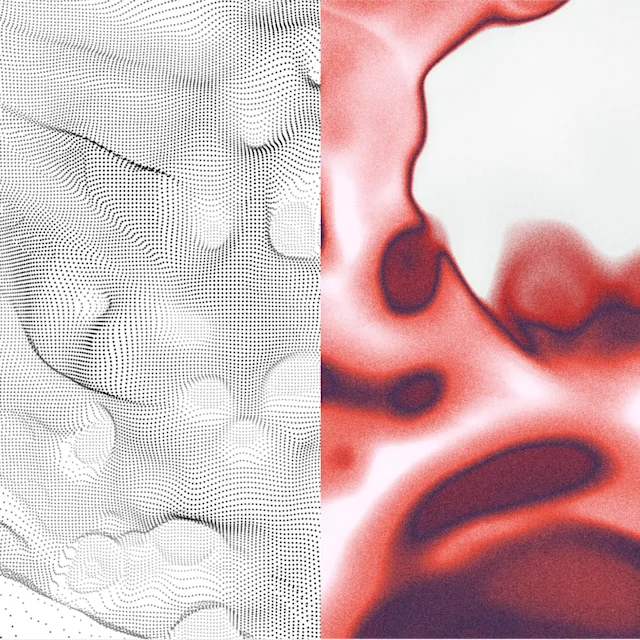
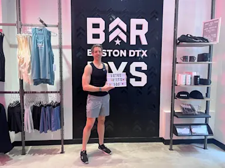
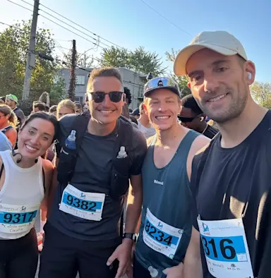

Understand your body, one read at a time
Explore every part of your health
From deep sleep to resting heart rate, pick a topic and we'll show you everything we've written about it.

Latest from the Journal
All articlesGuides chosen for your goals
Start with what you want to change. Each collection gathers the articles that will help most.
-
Grounded in research
Every guide is based on published studies and checked by our team.
-
Written by our coaches
Physiologists, coaches and nutritionists who work with real data every day.
-
Read in five minutes
Short, clear and practical, with three key takeaways in every article.
All articles
- Free to read
- No sign-up needed
- New every week
No articles in this topic yet.
The Sunday Reset
One email a week with our newest guide, a habit to try and the stat that surprised us most. Unsubscribe whenever you like.
Out there with D'Vync
- Ski day
Cold-weather sports raise your strain more than you'd think. Check your recovery the morning after.
Tip from the coachesLong rides count as training. Refuel with protein and carbs within a couple of hours.
Tip from the coaches
Weekend reset
OutdoorsA short walk after dinner lowers your heart rate at bedtime. Small habit, real difference.
Tip from the coachesSlept badly? Keep your wake time anyway. One steady morning beats a long lie-in.
Tip from the coaches- Morning ride
FAQ
Do I need a D'Vync to use the Journal?
No. Every article is free to read. If you wear a D'Vync, you'll also see your own numbers for the topics we cover.
How often do you publish?
We publish a new guide every week and update older ones when new research comes out.
Who writes the articles?
Our in-house team of coaches, physiologists and nutritionists. Each piece is reviewed before it goes live.
Can I suggest a topic?
Please do. Send your idea through our contact page and we'll add it to the list.
Is this medical advice?
No. The Journal is for general education. Talk to a healthcare professional about your own health.
The D'Vync Journal is for general information only and is not medical advice. D'Vync is not a medical device and is not intended to diagnose, treat or prevent any condition.